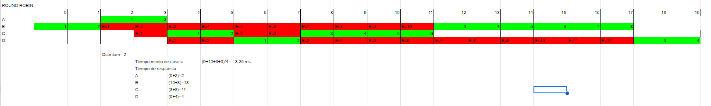

1. Utilizando los algoritmos de planificación FIFO, SJF y SRTF, calcula el tiempo de espera y tiempo de respuesta de cada proceso. Realízalo gráficamente y calcúlalo de forma numérica. Calcula también el tiempo medio espera y de respuesta de cada algoritmo.
Tabla en hoja de cálculo en drive
2. Utilizando los algoritmos de planificación FIFO, SJF y RR, calcula el tiempo de espera y tiempo de respuesta de cada proceso. Realízalo gráficamente y calcúlalo de forma numérica. Calcula también el tiempo medio espera y de respuesta de cada algoritmo. En RR utiliza el quantum = 2

Tabla en hoja de cálculo en drive
3. Utilizando los algoritmos de planificación FIFO, RR y por prioridades no expulsivo calcula el tiempo de espera y tiempo de respuesta de cada proceso. Realízalo gráficamente y calcúlalo de forma numérica. Calcula también el tiempo medio espera y de respuesta de cada algoritmo. En RR utiliza el quantum = 2. La prioridad 1 es la más alta y la 4 la más baja. La prioridad sólo se tendrá en cuenta en el algoritmo por prioridades
Tabla en hoja de cálculo en drive
4. Investiga en que consiste y a qué tipo de dispositivos se aplica un algoritmo de planificación denominado “Algoritmo del Ascensor”. ¿qué es lo que desea optimizar dicho algoritmo? ¿Por qué?
El algoritmo del ascensor o SCAN se denomina así porque atiende los procesos a medida que las cabezas de lectura los va encontrando. Cuando llega a un extremo cambia de sentido y comienza de nuevo, haciendo un recorrido que recuerda a un ascensor. Se aplica en los discos duros HDD. Este algoritmo intenta optimizar la media de los tiempos de respuesta y mejorar la distribución del servicio.